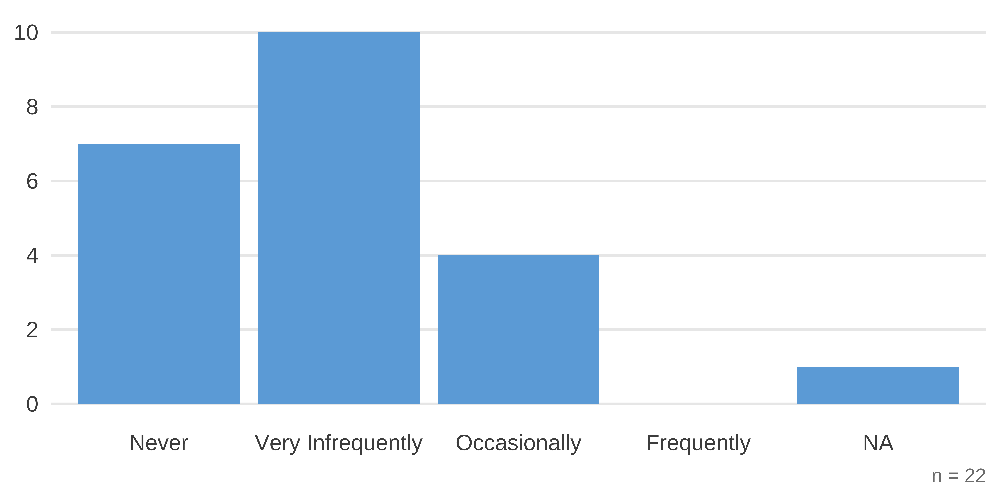
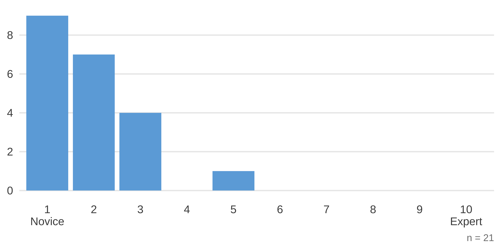
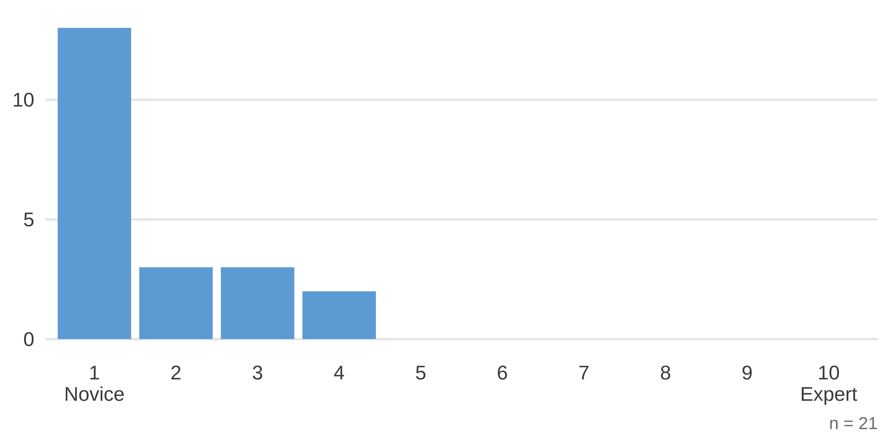

Welcome to R in 3 Months
Agenda
Welcome
Logistics
Weekly Plan
Questions on Getting Started with R
Next Week
Survey
If you haven’t yet completed the pre-survey, please do so now.
Welcome
Introductions
David Keyes
Gracielle Higino
Who Are You?
Where Are You From?
How much have you used R?
How would you rate your level of expertise working with R for DATA ANALYSIS?
How would you rate your level of expertise working with R for DATA VISUALIZATION?
On a scale from terrified to excited, how do you feel about the process of learning R?

Breakout Rooms
Share with the people in your breakout room:
Name
Location
A bit about your work
Organization (if applicable)
Where you hope to be in 3 months
How R in 3 Months Works
Training Overview
Course Materials
Course Questions
Project Assignments
Feedback
Forum
Weekly Overview
Thursday
- Live session from 10-11am Pacific time
- Live session video posted
- Follow-up email sent out
- Start working on course assignment
Monday
- Reminder email sent out
Tuesday
- Co-working session with Gracielle from 10-11am Pacific time
Wednesday
- Complete course and project assignments (ideally)
Coaching
Gracielle will be your coach, giving you personal guidance on anything you may have questions about
You can schedule 1-on-1 calls with her if you have specific questions:
Project Datasets
This is an opportunity for you to practice working with your own data
However, sometimes people’s own data can be quite complicated and not suitable for the beginning part of R in 3 Months
We have collected datasets better suited to where people just starting out are
Project Datasets
If you need help to remove personally identifiable information, please let Gracielle know!
Please check in with Gracielle via email about your data to make sure what you’re working with will serve you well
How to Organize Your Files in R in 3 Months
Getting Started Questions
Next Week
Course Assignment
- You’ll learn the fundamentals of data wrangling and analysis with the
dplyrpackage
Project Assignment
- Ask and answer three questions about your data
A Final Message to Leave You With